Perceptron
- 초기 인공 신경망
-
다수의 input으로부터 하나의 output을 내보내는 알고리즘
-
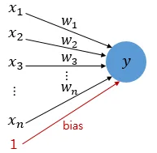
-
: input
-
: weight
-
: bias
-
: output
-
Step Function- 각 input이 weight에 곱해져 인공 뉴런에 보내지고, 각 input과 해당하는 weight의 곱을 전체 합한 값이 threshold를 넘으면 인공 뉴런이 1을 출력하고, 넘지 못하면 0을 출력
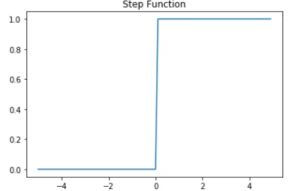
-
Activation Function- 뉴런에서 출력값을 변경시키는 함수
Sigmoid,Softmax등
-
-
Single-Layer Perceptron
-
input layer와 output layer 총 2개로만 구성
-
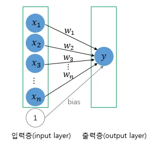
-
AND, NAND, OR 게이트를 구현할 수 있음
-
XOR 게이트는 구현할 수 없음
-
-
MLP (MultiLayer Perceptron)
-
layer를 더 쌓아 AND, NAND, OR 게이트를 조합해 XOR 게이트를 만들 수 있음
-
hidden layer: input layer와 output layer 사이 layer -
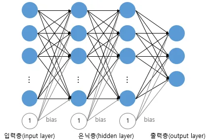
-
-
Deep Neural Network
- hidden layer가 2개 이상인 신경망
-
Artificial Neural Network
-
Feed-Forward Neural Network (FFNN)
- input layer에서 output layer로 연산이 전개되는 신경망
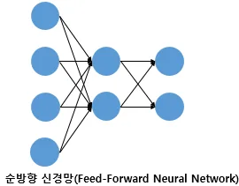
- input layer에서 output layer로 연산이 전개되는 신경망
-
Recurrent Neural Network (RNN)
- 이전 시점의 정보를 기억해 현재 input과 함께 처리하는 순환 신경망
- hidden layer의 output을 다시 hidden layer의 input으로 사용
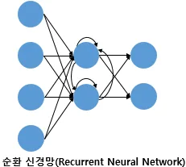
-
Fully-Connected Layer (FC, Dense Layer)
- 어느 layer의 모든 뉴런이 이전 layer의 모든 뉴런과 연결되어 있는 layer
-
Activation Function
-
hidden layer와 output layer의 뉴런에서 output을 결정하는 함수
-
특징
Nonlinear function- 직선 1개로 그릴 수 없는 함수
- 선형 함수를 n번 추가해도, 1회 추가한 것과 동일
- 직선 1개로 그릴 수 없는 함수
-
Sigmoid Function과Vanishing Gradient-
Sigmoid Function을 사용한 인공 신경망 가정
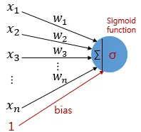
-
학습 과정
- input에 대해
forward propagation - 예측값과 실제값의 오차를
loss function으로 계산 - 미분을 통해
Gradient계산 back propagation수행back propagation: output layer에서 input layer로 weight와 bias를 업데이트하는 과정
- input에 대해
-
Gradient를 구하는 과정에서 output 값이 0 또는 1에 수렴하면, Gradient 값이 0에 가까워짐
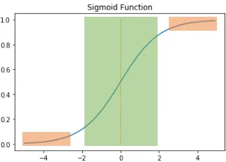
- back propagation 과정에서, 0에 가까운 값이 누적해서 곱해짐
Vanishing Gradient현상 발생Vanishing Gradient: 앞쪽 layer에는 gradient 값이 잘 전달되지 않는 현상 발생
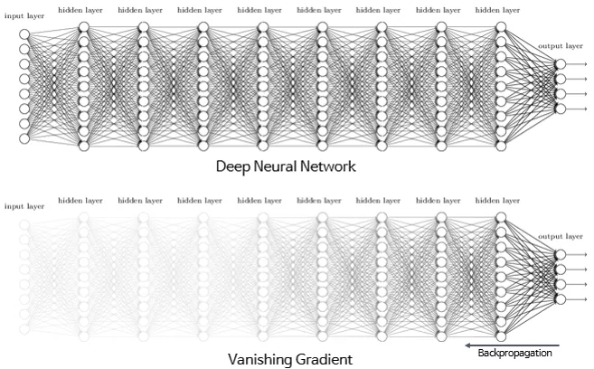
- back propagation 과정에서, 0에 가까운 값이 누적해서 곱해짐
-
-
Hyperbolic tangent function (tanh)- 입력값을 -1~1 사이 값으로 변환
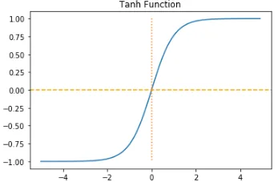
- 입력값을 -1~1 사이 값으로 변환
-
ReLUhidden layer에서 주로 사용
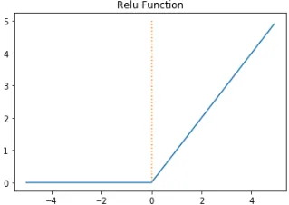
-
음수를 입력하면, 0을 출력
-
양수를 입력하면, 입력값을 그대로 반환
-
문제점
Dying ReLU문제 발생Dying ReLU: input이 음수면, 기울기가 0이 되는 문제
-
-
Leaky ReLUDying ReLU를 보완하기 위한ReLU의 변형 함수 중 하나
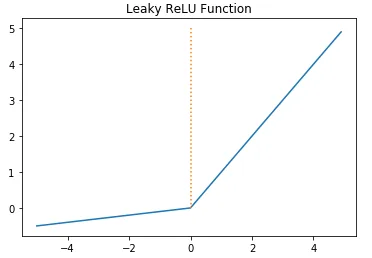
- 음수를 입력하면, 0이 아니라 0에 가까운 수를 반환
-
Softmax Functionsigmoid와 동일하게,output layer에서 주로 사용- Multi-Class Classification 문제에 주로 사용
-
Matrix Multiplication for Neural Networks
-
Foward Propagation- input이 input layer에 입력되어 output layer에서 예측값을 얻는 과정
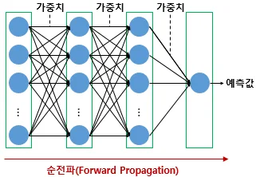
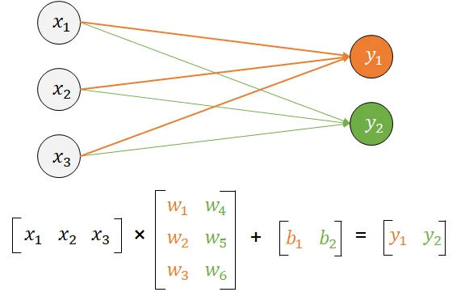
- input 차원이 3, output 차원이 3
- weight가 6개, bias가 2개
- input이 input layer에 입력되어 output layer에서 예측값을 얻는 과정
-
Parallel computation
- 행렬곱을 사용하면, 병렬 연산 가능
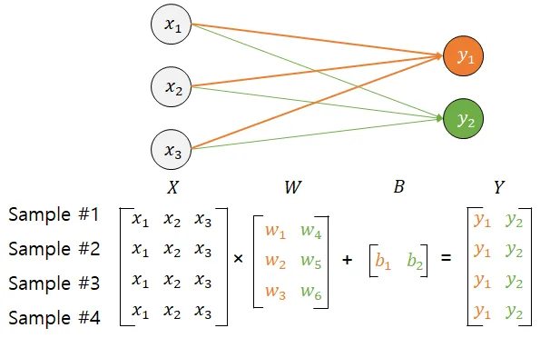
- batch computation : 인공 신경망이, 다수의 data를 동시에 처리하는 것
- 행렬곱을 사용하면, 병렬 연산 가능
How to Train DeepLearning
-
Loss Function- 실제값과 예측값 차이를 수치화해주는 함수
MSEBinary Cross-EntropyCategorical Cross-Entropy
-
Gradient Descent for Different Batch Sizes
-
loss function의 값을 줄여나가며 train하는 방식은, 어떤 optimizer를 사용하냐에 따라 달라짐
-
Batch: parameter 값을 조정하기 위해 사용하는 data의 양
-
Batch Gradient Descent- 기본적인 Gradient Descent
- loss를 구할 때, 전체 data를 고려
- 한 번의 epoch에 모든 parameter 업데이트를 1회 수행
- 많은 시간 소요
-
SGD (Stochastic Gradient Descent)Batch Size가 1인 Gradient Descent- parameter를 랜덤으로 선택한 하나의 data에 대해서만 계산하는 방법
-
리소스가 적은 컴퓨터에서도 쉽게 사용 가능
-
parameter 변경 폭이 불안정하고, 정확도가 낮을 수 있음
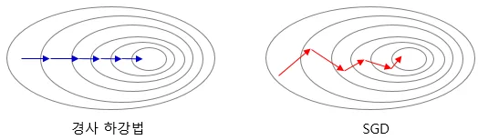
-
-
Mini-Batch Gradient DescentBatch Size를 지정해 해당 data 개수만큼 parameter 값을 조정하는 방법SGD보다 안정적
-
Optimizer
-
MomentumGradient Descent에 관성을 더해주는 방법- 접선의 기울기에 한 시점 전의 접선의 기울기값을 일정 비율 반영
Local Minimum을 벗어날 수 있음
-
Adagrad-
각 paramter에 서로 다른
learning rate를 적용- 누적 기울기가 큰 parameter엔 작은 learning rate 적용
- 누적 기울기가 작은 parameter엔 큰 learning rate 적용
- ∵ 모든 parameter에 동일한
learning rate를 적용하는 것은 비효율적
-
train을 계속 진행하면,
learning rate가 지나치게 떨어짐
-
-
RMSprop- 최근 기울기 제곱의 이동 평균만을 사용해 오래 전 기울기의 영향을 점차 줄임
-
- : 현재 parameter 업데이트 시점
- : 현재까지 계산된 기울기 제곱의 이동 평균
- : 이전 시점의 기울기 제곱 이동 평균
- : 현재 시점에서 계산된 기울기
- : 과거 기울기 반영 비율. 보통 0.9 사용
- : 현재 기울기 반영 비율
Adagrad의 단점을 개선하는 방법
-
AdamRMSprop+Momentum- 과거 기울기를 반영해, parameter 업데이트 방향과 learning rate를 조절하는 방법
-
Epochs,Batch Sizeand IterationEpoch- 전체 data에 대해
forward propagation과back propagation가 끝난 상태
- 전체 data에 대해
Batch Size- 몇 개의 data 단위로 parameter를 업데이트하는지
Iteration또는StepEpoch1회를 마치기 위해 필요한Batch의 개수- 또는, 한 번의
Epoch내에서 이뤄지는 parameter의 업데이트 횟수
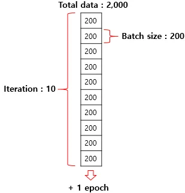
-
-
| 참고 : Batch & Epoch
Back Propagation
- Forward Propagation
- Back Propagation Step 1
- output layer와 바로 직전 hidden layer를 업데이트 하는 단계
- Back Propagation n회 반복
Prevent Overfitting
-
Data Augmentation- 이미지 rotation, noise 추가, 일부분 수정 등
- Back Translation (text)
-
모델의
Complexity줄이기Complexity: 모델의 구조가 얼마나 복잡하고 연산량이 많은지Capacity: parameter의 수
-
Regularization적용-
L1(L1 Norm)weight들의 절대값 합계를Cost Function에 추가- 일부 weight를 0으로 만들어,
Sparse한 모델을 만듦- weight가 0인 feature는 제거된 것처럼 동작하므로
feature selection효과feature selection: 여러 input feature 중 예측에 중요한 feature를 제외한 불필요한 feature를 제거하는 과정
- weight가 0인 feature는 제거된 것처럼 동작하므로
-
L2(L2 Norm)- 모든
weight들의 제곱합을Cost Function에 추가 - 큰 weight에 더 큰 페널티를 부여해 weight가 지나치게 커지는 것을 방지
- 모든
-
-
Drop Out- training 과정에서, 신경망 일부를 사용하지 않는 방법
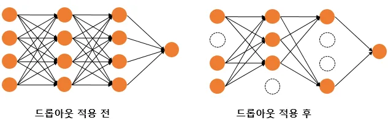
- 신경망이 특정 뉴런에 너무 의존하지 않게 방지
- 매번 무작위로 뉴런을 사용하지 않으므로, 서로 다른 신경망들을 앙상블한 것 같은 효과
- training 과정에서, 신경망 일부를 사용하지 않는 방법
Gradient Vanishing & Gradient Exploding
-
Gradient Vanishing- back propagation 과정에서, input layer에 도달할수록 Gradient가 작아져 weight 업데이트를 제대로 할 수 없는 현상
ReLU및 변형 함수,XavierHe Initialization,Batch Normalization,Layer Normalization으로 완화
-
Gradient Exploding- back propagation 과정에서, input layer에 도달할수록 Gradient가 너무 커져 weight가 과도하게 업데이트 되는 현상
- train이 불안정해지거나, loss가 급격히 증가
Gradeint Clipping,XavierHe Initialization,Batch Normalization,Layer Normalization으로 완화
- back propagation 과정에서, input layer에 도달할수록 Gradient가 너무 커져 weight가 과도하게 업데이트 되는 현상
-
해결 방안안
-
ReLU및 변형 함수 사용 -
Gradient Clipping- 기울기 값이 threshold를 넘으면 제거. 즉, threshol가 최대 기울기 값
- RNN에서 유용
-
Weight initialization- 동일한 모델을 사용해도, 초기 weight가 어떤 값을 가졌는지에 따라 모델의 train 결과가 상이
-
Xavier Initialization(Glorot Initialization)ReLU와 함께 사용할 경우 성능이 좋지 않음
-
균등 분포를 사용해 초기화
-
- weight를 ~ 값으로 초기화
- : 이전 layer의 뉴런 개수
- : 다음 layer의 뉴런 개수
- weight를 ~ 값으로 초기화
-
균등 분포 : 구간 내 모든 값이 동일한 확률로 선택되는 확률 분포
-
-
정규 분포로 초기화
-
He Initialization(He Initialization)Xavier Initialization과 유사하게, 정규 분포와 균등 분포로 나뉨- 단, 다음 layer의 뉴런 수를 반영하지 않음
ReLU와 함께 사용하는 것이 효율적이고 보편적
-
균등 분포를 사용해 초기화
-
정규 분포로 초기화
-
Batch Normalization-
신경망 각 layer에 들어가는 input을 평균과 분산으로 정규화해 train을 효율적으로 만듦
- input에 대해 평균을 0으로 만들고, 정규화
- 정규화된 data에 대해
Scale과Shift수행해 다음 layer에 일정 범위 값들만 전달되도록 함Scale: 값에 일정한 수를 곱하는 연산Shift: 값에 일정한 수를 더하는 연산
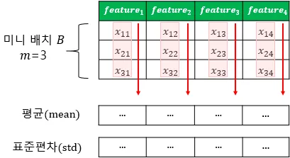
-
각 layer의
Activation Function을 통과하기 전에 수행 -
장점
Gradient Vanishing문제 크게 개선- weight 초기화에 덜 민감해짐
- 큰 learning rate 사용 가능으로 학습 속도 개선
Mini Batch마다 평균과 표준편차를 계산해 사용하므로, train data에 noise를 넣어 과적합을 방지하는 효과
-
단점
- test data 예측 시, 실행 시간이 느려짐
-
한계
-
Mini Batch Size에 의존적- 너무 작은
Batch Size에서Batch Normalization효과가 극단적으로 작용해, train에 악영향을 줄 수 있음
- 너무 작은
-
RNN에 적용하기 어려움
- RNN은 각
time step마다 다른 통계치를 가지므로,Batch Normalization을 적용하기 어려움
- RNN은 각
-
-
Internal Covariate ShiftInternal Covariate Shift-
내부 공변량 변화.
-
train 과정에서 앞쪽 layer의 parameter가 계속 바뀌면서, 뒤쪽 layer가 input으로 받는 중간 활성값의 분포가 계속 변하는 현상
-
Covoriate: 공변량. 모델이 input으로 받는 feature 값 -
Internal: 신경망 내부 hidden layer output
-
-
-
Layer Normalization- 평균과 축을 계산하는
axis가 상이 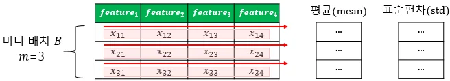
- 평균과 축을 계산하는
-
DeepLearning in Keras
-
Preprocessing
from tensorflow.keras.preprocessing.text import Tokenizer
-
Word Embedding
- text 내 단어들을
Dense Vector로 만드는 방법 Embedding({total_word_count}, {output_dimension}, {input_length})
- text 내 단어들을
-
Modeling
from tensorflow.keras.models import SequentialSequential({output_neuron_count}, {input_dimension}, {activation_function})- layer를 구성하기 위한 함수
summary()- 모델 정보를 요약해 출력
-
Complie & Training
-
compile(optimizer={optimizer}, loss={loss_function}, metrixs={train_indicator}) -
fit({train_data}, {label_data}, {epochs}, {batch_size})validation_data({x_val}, {y_val})validation_split={percentage}- data 분할 비율 설정
verbose={0, 1, 2}- train 중 출력되는 문구 설정
- 0 : 출력하지 않음
- 1 : train의 진행도 표기
- 2 : mini batch마다 loss 정보 출력
- train 중 출력되는 문구 설정
-
-
Evaluation & Prediction
evaluate({test_data}, {label_test_data}, batch_size={batch_size})predict({data}, batch_size={batch_size})
-
Save & Load
save({model_name})load_model({model_name})
Keras Sequential API
-
여러 layer를 입력부터 출력까지 순서대로 쌓아 신경망을 설계하는 방식
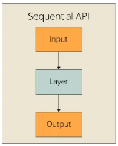
-
ex) ```
from tensorflow.keras.models import Sequential
from tensorflow.keras.layers import Input, Densemodel = Sequential(
[ Input(shape=(10,)),
Dense(64, activation=‘relu’),
Dense(64, activation=‘relu’),
Dense(1, activation=‘sigmoid’)
])```
-
-
이전 layer의 output이 다음 layer의 input으로 자동 연결됨
-
장점
- 하나의 입력에서 하나의 출력으로 이어지는 단순한 선형 구조에 적합
- 쉽고, 사용하기 간단함
-
단점
- 다수의 input 및 output을 가진 모델 또는 layer 간 concatenate나 add 연산 모델 구현에 부적합
Keras Functional API
-
각 layer를 일종의 함수로서 정의
-
각 함수를 연산자들로 조합해 신경망을 설계
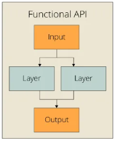
-
ex) ```
from tensorflow.keras.layers import Input, Dense
from tensorflow.keras.models import Modelinputs = Input(shape=(10,)) # input layer 정의
hidden1 = Dense(64, activation=‘relu’)(inputs)
hidden2 = Dense(64, activation=‘relu’)(hidden1)
output = Dense(1, activation=‘sigmoid’)(hidden2)
model = Model(inputs=inputs, outputs=output)```
-
-
장점
Sequential API로 구현하기 어려운 복잡한 모델 구현 가능
-
단점
- input의 shape를 명시한 input layer를 모델 앞단에 정의해야함
- 모델을
DAG로 취급하나, 모든 모델이DAG에 속하는 것은 아님DAG(Directed Acyclic Graph) : node와 방향 edge으로 구성되며, 특정 node로 다시 돌아오는 순환이 없는 graph
Keras Subclassing API
-
Python Class 형태로 모델과 layer의 동작을 정의하는 방식
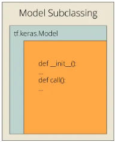
-
ex) ```
import tensorflow as tfclass LinearRegression(tf.keras.Model):
def init(self):
super(LinearRegression, self).init()
self.linear_layer = tf.keras.layers.Dense(1, input_dim=1, activation=‘linear’)
def call(self, x):
y_pred = self.linear_layer(x)
return y_pred
model = LinearRegression()```
-
-
장점
Functional API로 구현할 수 없는 모델 구현 가능
-
단점
- 구조 확인, 저장, 디버깅이 상대적으로 복잡할 수 있음
MLP text classification
-
MLP는
FFNN의 가장 기본적인 형태 -
여러 문장을 단어의 존재 여부빈도TF-IDF 값 등을 나타내는 고정 크기 수치 matrix로 변환
from tensorflow.keras.preprocessing.text import TokenizerTokenizer.texts_to_matrix({text}, mode={mode})
Neural Network Language Model (NNLM)
-
신경망 언어 모델의 시초
N-gram과 동일하게 앞의 n개의 단어만 참고window: 참고하는 단어의 범위
-
기존
N-gram언어 모델의 한계 극복-
Sparsity problem: 충분한 data를 관측하지 못하면, 언어를 정확히 모델링할 수 없음- machine이 단어의
semantic similarity를 알 수 있다면 해결 가능semantic similarity를 학습하도록 설계한 모델이 NNLM
- machine이 단어의
-
N-gram: 연속된 N개의 단어 또는 문자를 하나의 묶음으로 보고 문맥 pattern을 표현하는 방법
-
-
학습 과정
- 예문의 일부를 주어 다음 단어 예측하는 방식
- input 단어 선택 후 One-Hot Vector 변환
- projection layer에서 Embedding Vector 조회
projection layer- 일반 hidden layer와 다르게 weight matrix와 곱셈을 이뤄지지만, activation function이 존재하지 않음
- linear layer임
- 0값을 갖는 One-Hot Vector와 w 행렬의 곱은 w 행렬의 i번째 행을 그대로 가져오는 것과 동일함
lookup table: One-Hot Vector의 0은 연산 결과에 영향을 주지 않고, 1인 위치에 대응하는 weight 행만 선택해 Embedding Vector로 가져오는 방식
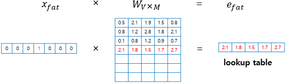
- Embedding vector 결합
Embedding Vector: 단어의 의미와 관계를 학습 가능한 저차원 실수값들로 표현한 vector
-
장점
- 훈련 Corpus에 없던 단어여도, 다음에 올 단어 선택 가능
-
단점
- 다음 단어 예측을 위해 모든 이전 단어를 참고하지 않음